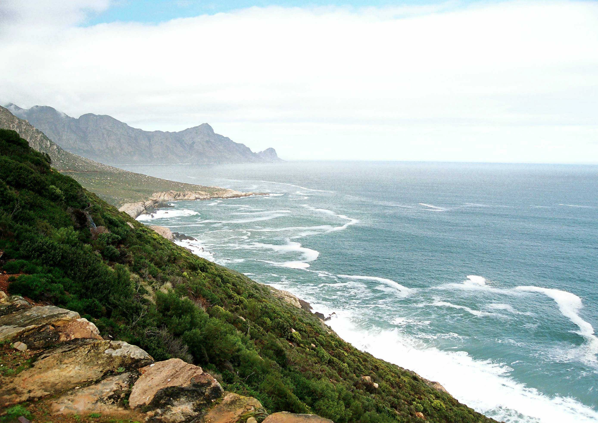
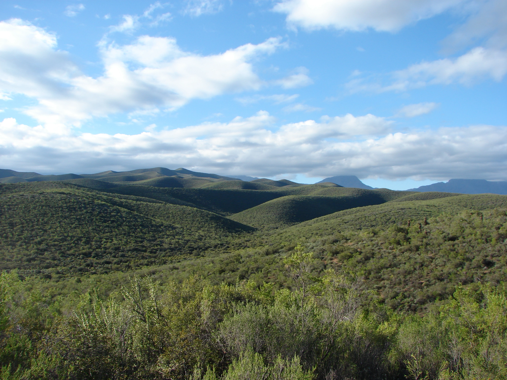
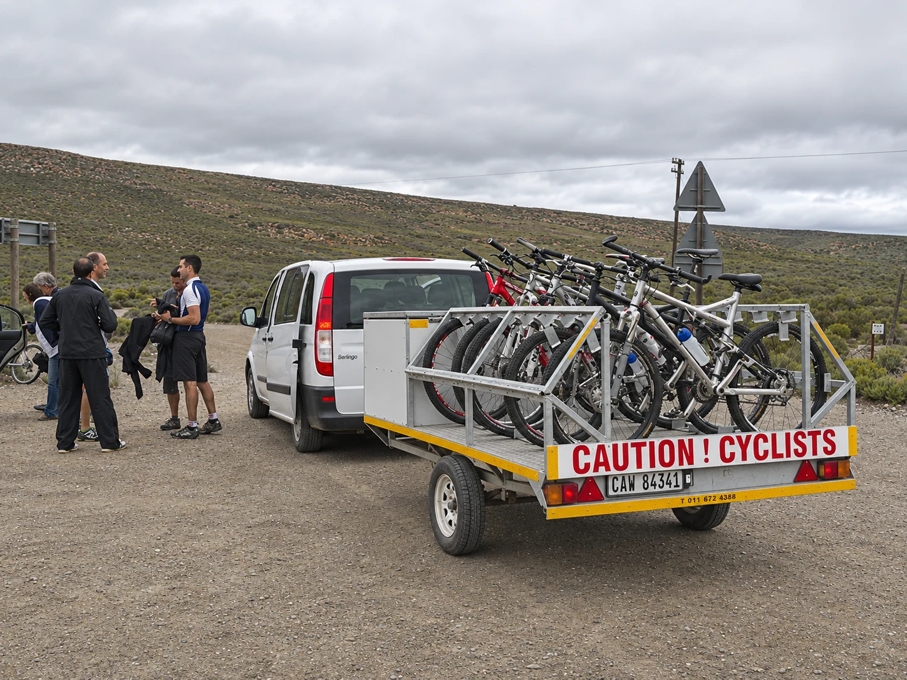
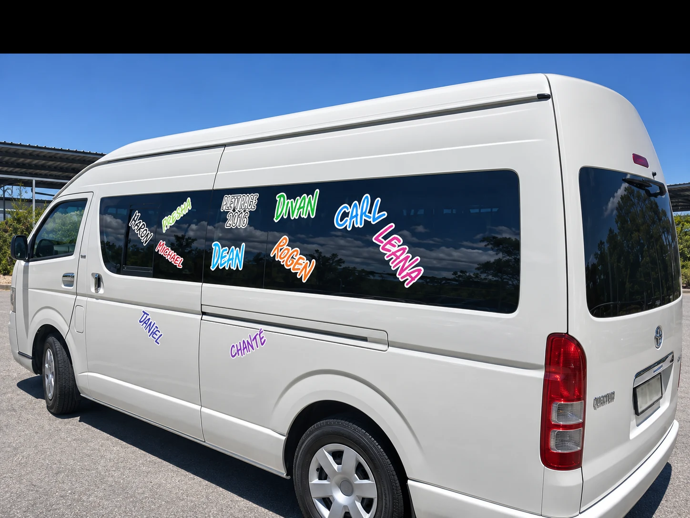

Airport shuttles
& transfers
Reliable transfers to and from George Airport for individuals, families and groups travelling throughout the Garden Route.
Arrange a pickup →George • Garden Route • South Africa
Airport transfers, private shuttles and unforgettable day trips — delivered with the local knowledge that comes from more than 30 years on the road.
Move your way
Whether it’s a quiet airport pickup, a group adventure or specialist transport for your gear, our experienced team gets you there safely, comfortably and on time.
Reliable transfers to and from George Airport for individuals, families and groups travelling throughout the Garden Route.
Arrange a pickup →Discreet, quality transport in unmarked vehicles for groups of 4 to 10 people across the Garden Route.
Request VIP transport →Your chauffeur-driven way to explore the beauty and wonders of the Garden Route and Klein Karoo.
See day trips →Transport for events, festivals, luggage, cycles, sporting gear and groups of up to 22 passengers.
Plan group transport →Photography: Frankbel / Wikimedia Commons · Moongateclimber / Wikimedia Commons · Zeelie Taxis archive
On the road


The right ride
Our fleet ranges from comfortable taxis for 1–4 passengers to Hyundai H1 shuttles for 7 and Quantum buses seating 13–22 people. Your luggage, cycles and golf equipment can travel too.
Choose your vehicle
Travelling with cycles, golf equipment or additional luggage? Include the details in your quote request so the team can recommend the right vehicle.
Go further
From George to Knysna, Plettenberg Bay, Oudtshoorn and beyond — no destination is too near or too far.

02 / SPECIALIST
03 / EVENTSDoor to destination
Pre-book an airport connection, point-to-point transfer or group journey. For destinations further afield, send the team your itinerary for a tailored quotation.
Airport, town and surrounding-area transfers.
Convenient connections from George Airport.
Private and group travel along the Garden Route.
Airport transfers, events and Plett Rage transport.
Klein Karoo transfers and day-trip journeys.
Pre-arranged transport for individuals and groups.
A George original
Zeelie Taxis is one of the oldest taxi services in George. For more than 30 years, we have moved travellers of every group size to destinations across the Garden Route — and anywhere in South Africa.
Our vehicles comply with South African roadworthy standards and carry sufficient liability insurance, so every journey is handled with safety, style and comfort.
In their words
“Excellent service from start to finish. Our driver Faizel was brilliant, friendly and courteous — he was on time for both pick up and drop off, and the vehicle was in superb condition.”
Lindsey RaynerGarden Route traveller
“We have made use of their service between the airport and Glentana for a number of years. They are a friendly lot and we have never had any dissatisfaction with their service.”
Paul LouwReturning passenger
From the road
Plan safe, reliable transport to the celebrations in Mossel Bay.
Read article →Transport planning for one of the Garden Route’s biggest annual events.
Read article →A customer story about safe, reliable and professional transport.
Read article →Before you travel
Need something not covered here? Include it in your booking request and the team will respond with the right transport option.
The fleet covers private trips for 1–4 passengers, Hyundai H1 shuttles for up to 7, and Quantum buses for groups of 13–22.
Yes. Zeelie transports luggage, cycles, sporting gear and golf equipment. Mention your equipment and quantities when requesting a quote.
Regular destinations include George, Wilderness, Knysna, Plettenberg Bay, Oudtshoorn and Mossel Bay, with transfers available throughout the Garden Route and to destinations elsewhere in South Africa.
The published daily operating hours are 06:00 to 22:00.
Pricing depends on the route, group size, vehicle and any specialist luggage. Send your journey details for a tailored quotation.
Include your airline, flight number, arrival or departure time, passenger count and destination in the booking notes.
Request a quote
Share your route, date, passenger count and luggage details. The Zeelie team will recommend the right vehicle and provide a tailored quotation.